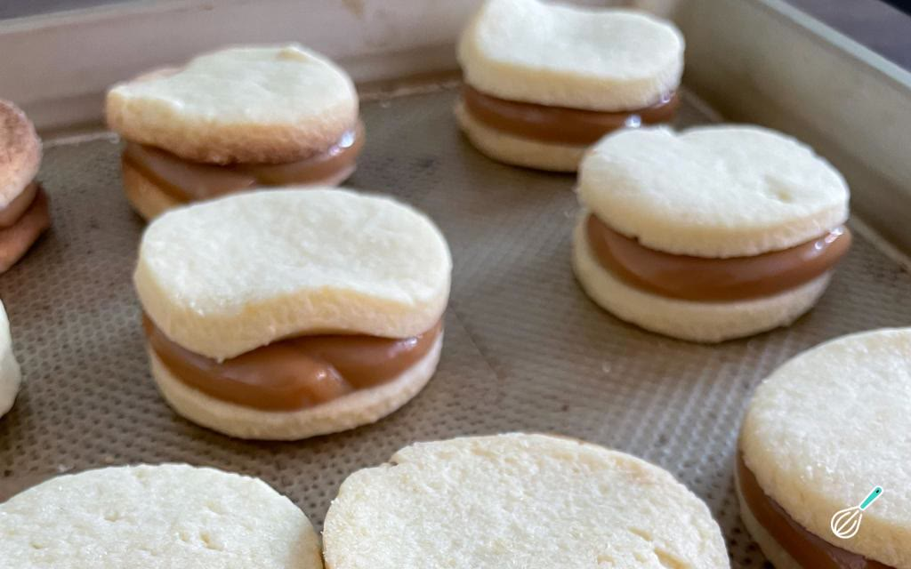

Doces · Biscoitos
Casadinhos recheados

Ingredientes
- 1 1/4 xícara de margarina
- 1 xícara + 5 colheres (sopa) de açúcar
- 1/2 colher (chá) de canela
- 1 pitada de sal
- 1 ovo
- 2 2/3 xícaras de farinha de trigo
- 1 xícara de doce de leite
- 1 pacote pequeno (50 g) de coco ralado
- Farinha e manteiga para untar
Modo de preparo
- Bata margarina amolecida até creme; junte 1 xícara de açúcar, canela, sal e ovo.
- Acrescente farinha peneirada; trabalhe com as mãos.
- Abra com 0,5 cm; corte círculos de 4,5 cm. Asse a 180 °C 10–15 min.
- Envolva no açúcar restante; recheie com doce de leite e coco. Esfrie e congele.
Observação
Congelamento: recipiente rígido com toalhas de papel; descongele 1 h.